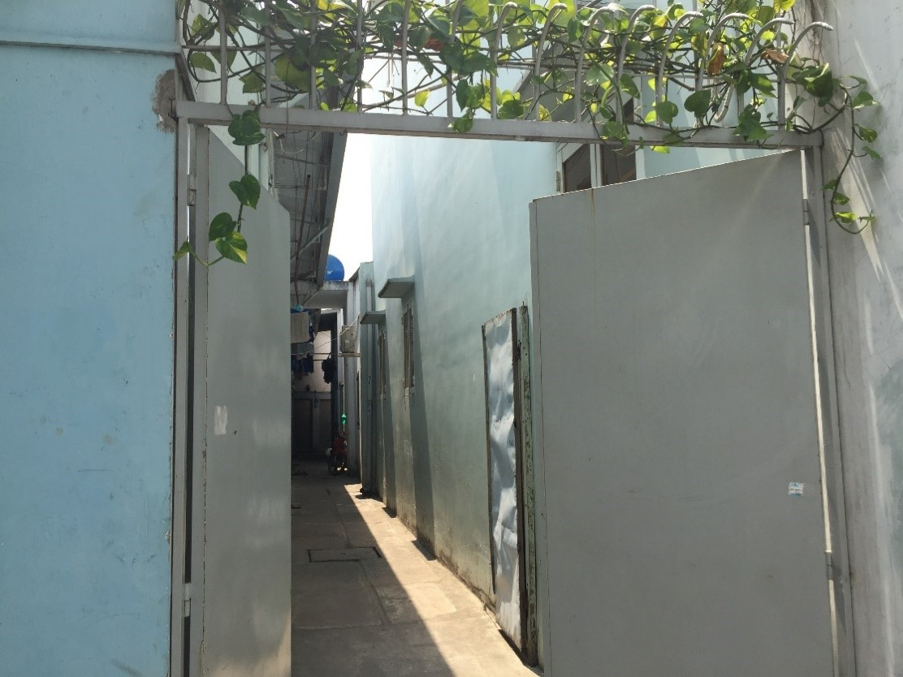
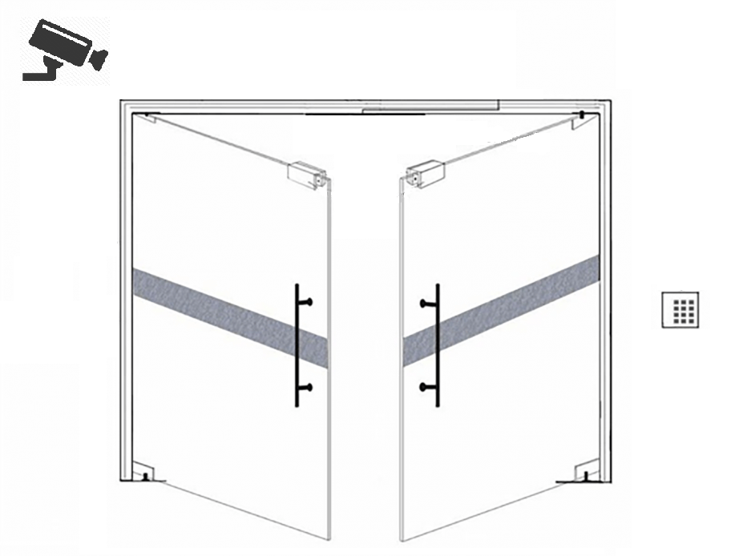
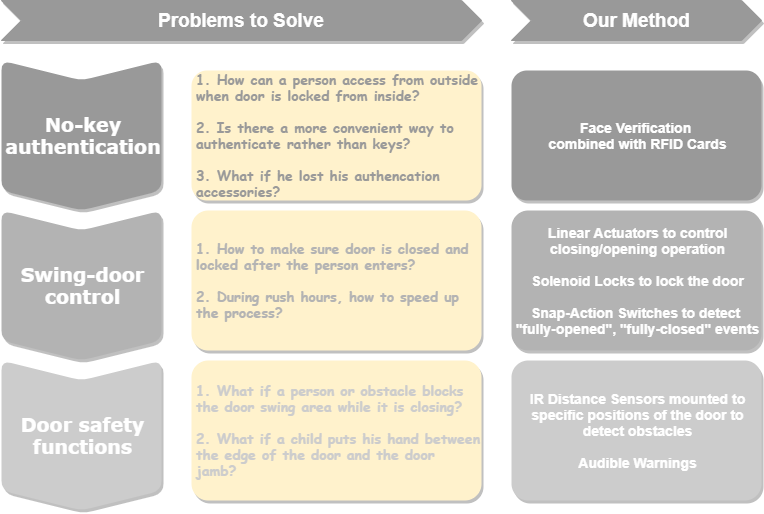
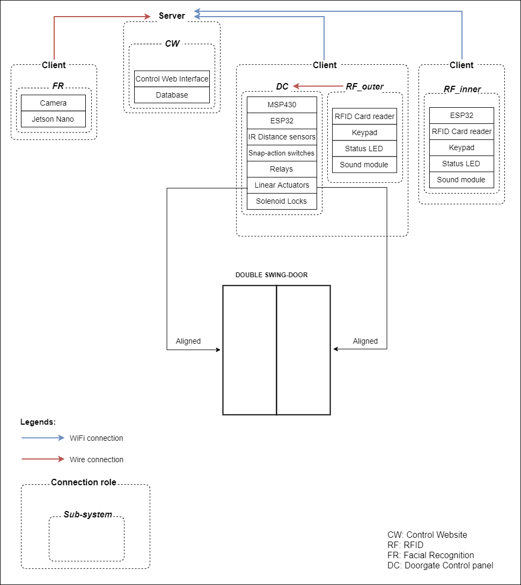
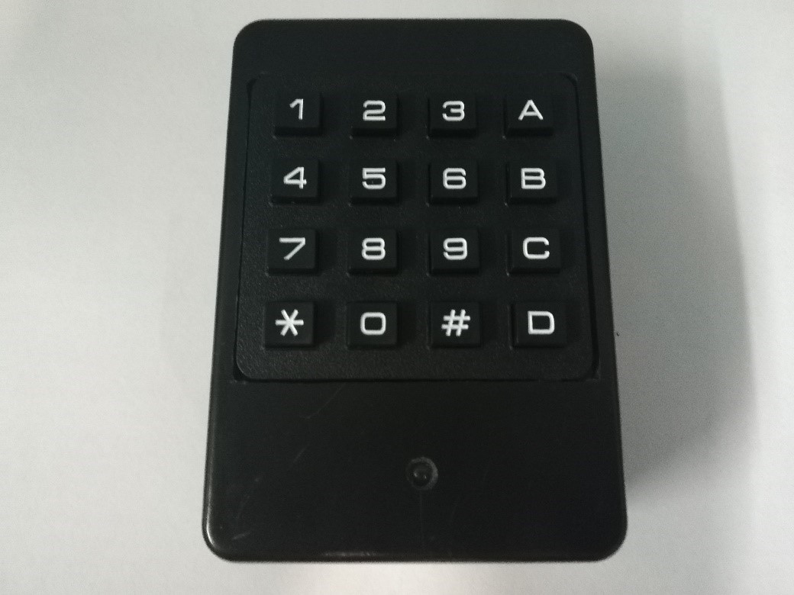
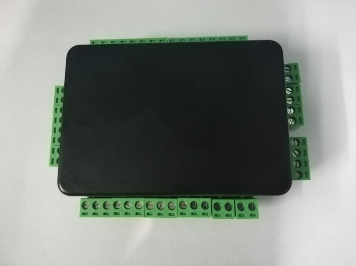
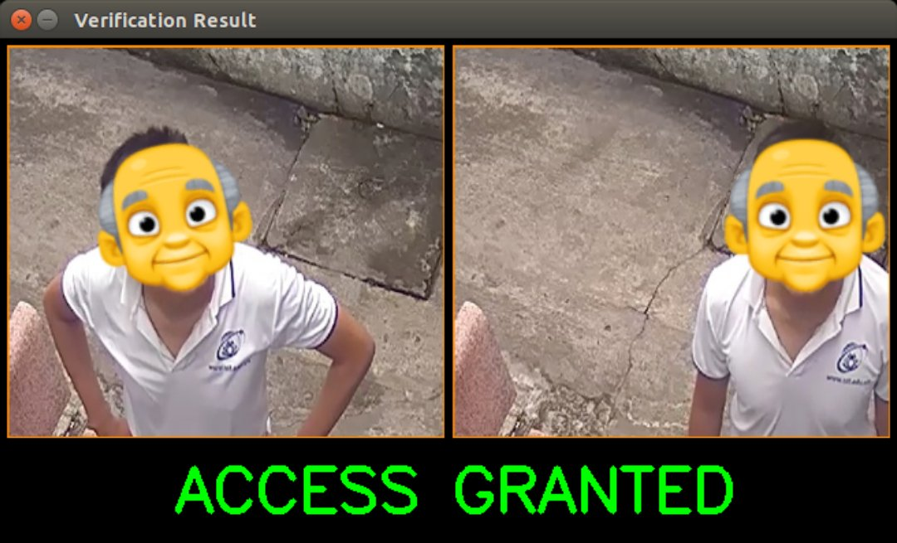
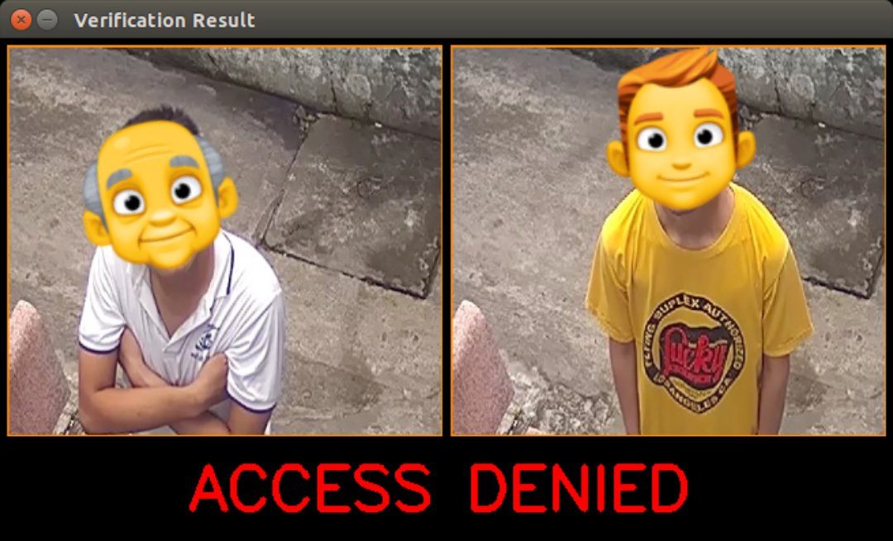

Direct words: Due to an actual need of an automatic mechanism for the current double swing door, this project is triggerd.

The door needing help ^^
Beautifully big words: Based on the fact that security technologies are needed in today's world, where houses, buildings, factories, airports need to be secured the technological way.
This project is chosen. The project aims to create a complete system that supports 5 different stages of an access control system including Authentication, Authorization,
Decision, Management and Logging, combined with with automatic swing door control and safety functions. The system provides both proximity and biometrics for Authentication,
which uses RFID cards and facial recognition. We have have built up a prototype that has been tested in both ideal and actual environment. The results prove the be good
in ideal environment for all times, while actual-use environment requires more time to record and analyze.
Currently, swing-door control systems are present, but not plentiful. The most common authentication method is proximity cards. Facial recognition is also used for authentication,
but while it is used for other types of entrances like slide-doors, optical or barrier arm turnstiles, we hardly see any double swing door control system applied this technology.
Furthermore, very few of them have safety functions. This project creates a system that solves 3 main problems: No-key authentication, Swing-door control and door safety functions.

How the idea is initially formed

Main problems and our solutions to them
 Block diagram of the system design
The whole system includes 4 sub-systems: DC, CW, RF and FR. Ideally, each one is in charge of a specific task, DC for Door Control, CW for Control Website, RF for RFID Cards and FR for Facial Recognition.
The authentication process is 2-factor: RFID card & Face verification. A typical operation process goes with these steps:
Person(s) approach(es) the door
Scan his RFID card
Get his face authenticated
Authorized and door opens, or unauthorized and door remains closed
DC and RF circuits have been tested and assembled. For FR, Face detection and verification program provides just above average accuracy with detection speed of ~28FPS. Further improvements need to be done,
especially on identity verification accuracy.

Finalized RF circuit encapsulated in box

Finalized DC circuit encapsulated in box

A typical successful access looks like this

A typical failed access looks like this
For functionality, our proposed method works well, when each sub-system performs expected functions, individually and when combined together. For perfection, however, there still exists several disadvantages:
RF sub-system: Voice warning alerts is not loud enough
FR sub-system: A screen should be equipped to better showing face verification process
DC sub-system: Lack hardware fault self detection functionality
CW sub-system: Not-so-professional user interface. Several door management sections need to be added.
More on further improvements:
Improve each sub-system, especially FR
Split RFID and face verification into 2 independent authentication methods, which means the system can operate on 1-factor when desired.